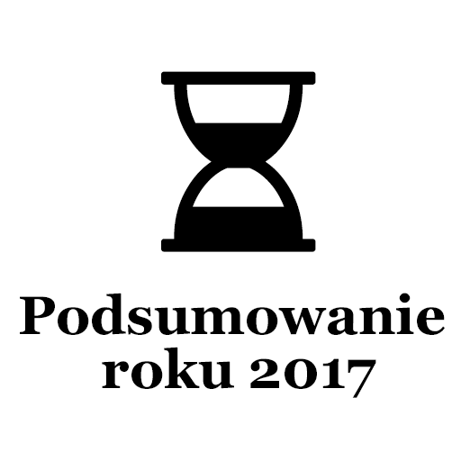

Post archive
Podsumowanie roku 2017

Wraz z końcem roku postanowiłem zrobić jego podsumowanie. Fajnie będzie kiedyś w przyszłości mieć możliwość przeczytania o moich postępach, postanowieniach oraz zobowiązaniach.
Co zrobiłem w ciągu roku 2017
- Ukończenie kompilatora dla własnego języka
- Rozpoczęcie bloga
- Ukończenie aplikacji Archiwista
- Znalezienie pracy jako C# developer
- Duże postępy nad aplikacją ZUTSchedule — Aplikacja desktopowa w dużej mierze została skończona, aplikacja mobilna wymaga jeszcze trochę pracy
- Znaczne postępy nad Generatorem muzyki[Startup] — możliwe, że już w styczniu zostanie ukończony pierwszy etap prac zgodnie z założeniami
- Z dniem dzisiejszym (30.12.2017) udzieliłem się aż 339 razy na moim koncie github — oby w następnym roku było jeszcze lepiej
- Napisanych 25 wpisów — wliczając ten post
Zobowiązania na rok 2018
- Standardowy wpis co tydzień w sobotę
- Minimum 2 razy w miesiącu dodatkowy wpis przedstawiający zmagania z zadaniami ze strony topcoder lub podobnej
- Ukończenie aplikacji ZUTSchedule
- Ukończenie pracy inżynierskiej
- Zapisanie się na studia drugiego stopnia
- Systematyczne ćwiczenia w domu